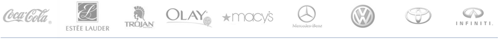

Crisp Media is a leading provider of premium mobile advertising technology, media and services to brand advertisers, agencies and publishers. Crisp’s mobile advertising platform, Crisp Engage™, enables the development of engaging and effective mobile rich media creative units, serves campaigns across all devices and OS types, and provides detailed analytics to inform campaign optimization and success. Crisp’s media offering, Crisp Premium Media™, offers targeted channels of brand-safe, premium mobile inventory with scale.
Recent Ad Showcase
Crisp is a founding member of the Open Rich Media for Mobile Advertising (ORMMA) specifications group, which helped to define the widely accepted MRAID standards now established by the IAB. The company has a proven track record of success, working with publishers like CBS, CNN, Hearst Magazines, Bonnier, Meredith, IGN, Rodale and The Wall Street Journal Digital Network, and with leading brands including General Motors, Toyota, Volkswagen, Intel, Hewlett Packard, Proctor and Gamble, Porsche, Unilever, Coca-Cola, American Express and Paramount Pictures.
Crisp is a founding member of the Open Rich Media for Mobile Advertising (ORMMA) specifications group, which helped to define the widely accepted MRAID standards now established by the IAB. The company has a proven track record of success, working with publishers like CBS, CNN, Hearst Magazines, Bonnier, Meredith, IGN, Rodale and The Wall Street Journal Digital Network, and with leading brands including General Motors, Toyota, Volkswagen, Intel, Hewlett Packard, Proctor and Gamble, Porsche, Unilever, Coca-Cola, American Express and Paramount Pictures.
Selected Client List

Recent News
Crisp Nominated for Best Mobile Video Advertising
Crisp Media was named a finalist for the Digiday Video Awards in the Best Mobile Video Advertising category for work on Kraft Fresh Take with Starcom.
Crisp Media was named a finalist for the Digiday Video Awards in the Best Mobile Video Advertising category for work on Kraft Fresh Take with Starcom.